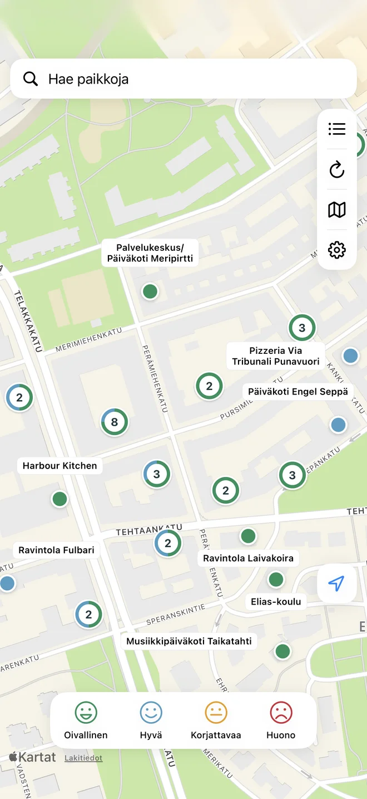

Löydä paikka
Hae nimellä, paikkakunnalla tai osoitteella. Haulla löytyvät myös paikat, joiden karttasijainti puuttuu.
iPhonelle
Miten lähialueesi paikat pärjäsivät Oiva-tarkastuksessa? Etsi ravintola, kahvila tai kauppa ja avaa sen tarkastusraportti.
Tulossa App Storeen
Maksuton perusversio. iOS 17 tai uudempi.

Hae nimellä, paikkakunnalla tai osoitteella. Haulla löytyvät myös paikat, joiden karttasijainti puuttuu.
Rajaa karttaa napauttamalla arvosanoja. Samassa pisteessä olevat toimipaikat avautuvat yhteiseen listaan.
Avaa paikan uusin Oiva-raportti ja katso, mitä tarkastuksessa on arvioitu. Arvosana kuvaa tarkastushetken tilannetta.
Oivat kartalla Pro
Rajaa hakua kunnan, toimialan, osoitteen tai tarkastusajan mukaan. Katso aiempien tarkastusten arvosanat ja lue niihin liittyvät raportit.
1,99 € kertamaksu
Ei kuukausimaksua. Pro-ostolla tuet myös sovelluksen ylläpitoa ja kehitystä.
Historia perustuu lähteistä löytyviin tietoihin. Tarkastusten ja raporttien määrä vaihtelee paikoittain, eikä historia välttämättä ole täydellinen.
Kartta, perushaku, arvosanojen rajaus ja paikan uusin raportti kuuluvat maksuttomaan versioon.
Pro on vapaaehtoinen sovelluksen sisäinen osto. Lopullinen hinta näkyy App Storessa ennen ostoa.
Oiva-tiedot ja raportit ovat peräisin Ruokaviraston Oivahymy-palvelusta. Oivat kartalla on Eetu Mänttärin tekemä riippumaton sovellus, ei Ruokaviraston virallinen palvelu.
Tiedoissa voi olla viiveitä tai puutteita. Tarkista tiedot tarvittaessa alkuperäisestä raportista. Lue käyttöehdot ja lähdetiedot.